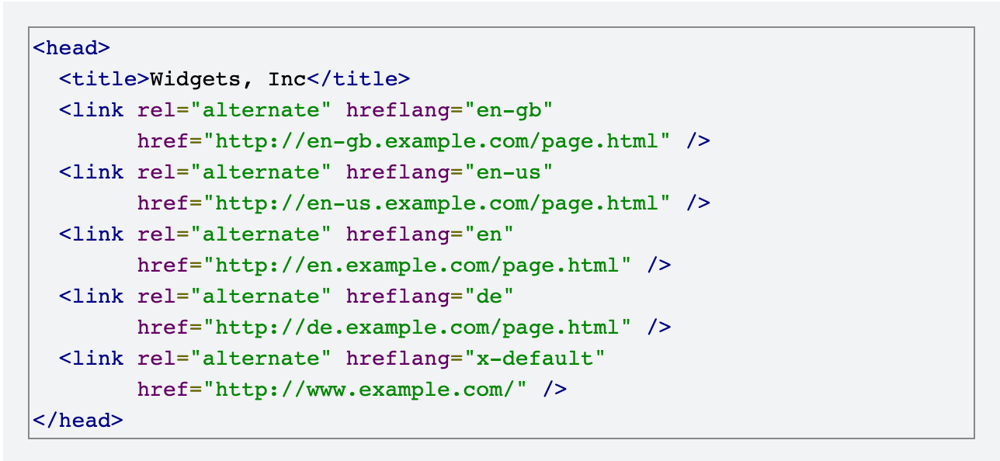

- Home
- Profile
- FAQ
- Blogs
- Dashboard

This link is related to the html program.
you can find html links from here. This is very informative link.
I believe the field of Information and Communication Technology (ICT) suits me because of my deep passion for problem-solving and my fascination with how technology can transform lives. In ICT, the blend of creativity and logic is essential, and I find joy in both crafting innovative solutions and optimizing systems for efficiency. The rapid evolution of technology keeps me engaged, and I enjoy the constant learning that comes with staying updated on new tools, languages, and methodologies. My natural curiosity drives me to explore how technology can improve communication, productivity, and access to information in various fields.
Additionally, ICT offers an opportunity to make a tangible impact on society, whether through developing user-friendly software, creating seamless digital experiences, or enabling secure and efficient communication. I thrive in dynamic environments where I can apply both technical skills and strategic thinking to solve complex problems. The interdisciplinary nature of ICT, combining software, hardware, and communication systems, aligns with my interest in collaborating across different domains to deliver innovative solutions. This makes me feel that ICT is not just a field I can excel in, but also one where I can continuously grow and contribute meaningfully.
List in html
- list 1
- list 2
- list 3
- list 4
- list 5